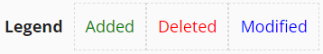

The lines in the plan represent tasks. Each color has a different meaning.
Options: Clicking on the eye will show the work order details and the comments icon will show last comments in the task. Additionally, it shows if the task has been updated with the WO PDF or not.